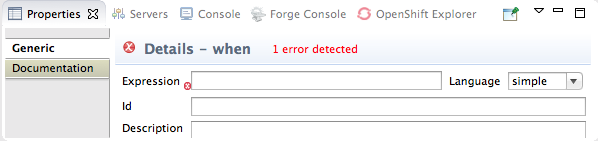
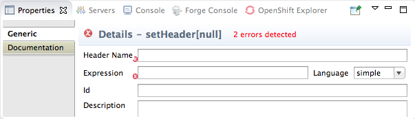
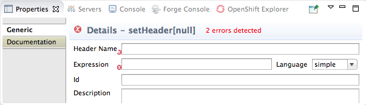

In this tutorial you will:
add a content-based router to your route
configure the content-based router
add a log endpoint to each output branch of the content-based router
add a SetHeader EIP after each log endpoint
add an Otherwise branch to the content-based router
To complete this tutorial you will need the CBRroute project you created in To Create a New Route.
To add and configure a content-based router for your route:
In Project Explorer, double-click
CBRroute/src/main/resources/OSGI-INF/blueprint/camelContext.xmlto open your CBRroute project.Select the connector joining the two nodes
file:src/data?noop=trueandfile:target/messages/others.Right-click it to open the context menu, and select to delete the connector.
![[Note]](imagesdb/note.png)
Note Alternatively, you can delete the connector by selecting it, then selecting from the toolbar's menu.
On the canvas, select the terminal node,
file:target/messages/others, and in the Properties editor, change the Uri and Id properties to:Uri:—
file:target/messages/validOrdersId:—
toValid
Then drag the node out of the way. You will connect it to another node later in this tutorial.
On the canvas, select the starting file: node,
file:src/data?noop=true, and right-click it to open the context menu.Select > > .
A choice node (
 ) appears on the canvas connected to the starting
file: node.
) appears on the canvas connected to the starting
file: node.
In the Properties editor, enter
choice1in the Id field.On the canvas, select the choice node, then right-click it to open the context menu.
Select > > .
A when node appears on the canvas connected to the choice node. The Properties editor opens, displaying the when node's property fields for you to edit, as shown:
Note When a required property is blank, the Properties editor marks it with
 . The number of properties that require configuring is
displayed in the title bar. Error icons and message disappear when you
configure the required properties.
. The number of properties that require configuring is
displayed in the title bar. Error icons and message disappear when you
configure the required properties.In the Expression field, enter
/order/orderline/quantity/text() > /order/orderline/maxAllowed/text().This expression determines which messages will transit this path in the route.
From the Language drop-down menu, select xpath.
In the Id field, enter
when1.Figure 14 shows the when1 node configured.
To add logging to your route:
On the canvas, select the when1 node, and then right-click it to open the context menu.
Select > > .
A log node appears on the canvas, connected to the when1 node. The Properties editor opens, displaying the log node's property fields for you to edit.
In the Message field, enter
quantity requested exceeds the maximum allowed - contact customer.In the Id field, enter
log1.Figure 15 shows the log1 node configured.
Note In Fuse Integration perspective's Messages View, the tooling inserts the contents of the log node's Id field in the
Trace Node Idcolumn for message instances, when tracing is enabled on the route (see Figure 29). In the Console, it adds the contents of the log node's Message field to the log data whenever the route runs.
To add and configure message headers:
On the canvas, select the log1 node, and then right-click it to open the context menu.
Select > > .
A setHeader node (
 ) appears on the canvas, connected to the log 1 node. The Properties
editor opens, displaying the setHeader node's property
fields for you to edit, as shown:
) appears on the canvas, connected to the log 1 node. The Properties
editor opens, displaying the setHeader node's property
fields for you to edit, as shown:In the Header Name field, enter
Destination.In the Expression field, enter
InvalidOrders.Select from the drop-down menu.
In the Id field, enter
setHead1.Figure 16 shows the node configured.
On the canvas, select the setHead1 node, and then right-click it to open the context menu.
Select > > .
A file:directoryName node appears on the canvas, connected to the setHead1 node. The Properties editor opens, displaying the file:directoryName node's property fields for you to edit.
On the Generic tab, replace
directoryNamewithtarget/messages/invalidOrdersin the Uri field, and entertoInvalidin the Id field.
To add and configure the otherwise branch to your route:
On the canvas, reselect the Choice node, then right-click it to open the context menu.
Select > > .
An otherwise node appears on the canvas, connected to the choice node. The Properties editor opens, displaying the otherwise node's property fields for you to edit.
In the Id field, enter
else2.The else2 node will eventually route to the terminal file: node (
file:target/messages/validOrders) any message that does not match the XPath expression set for the when1 node.On the canvas, select the else2 node, and then right-click it to open the context menu.
Select > > .
A log node appears on the canvas, connected to the else2 node. The Properties editor opens, displaying the log node's property fields for you to edit.
In the Message field, enter
valid order - process, and in the Id field, enterlog2.On the canvas, select the log2 node, and then right-click it to open the context menu.
Select > > .
A setHeader node (
) appears on the canvas, connected to
the log2 node. The
Properties editor opens, displaying
the setHeader node's property fields
for you to edit.In the Header Name field, enter
Destination.In the Expression field, enter
Dispatcher.Select from the drop-down menu.
In the Id field, enter
setHead2.On the canvas, drag the terminal file: node,
file:target/messages/validOrders, close to the setHead2 node.Select the setHead2 node, and then drag its connector arrow (
 ) to the terminal file: node and
release it.
) to the terminal file: node and
release it.To quickly realign all of the nodes on the canvas, right-click the canvas to open the context menu, and then select .
The route on the canvas should resemble Figure 17.
On the toolbar, select > to save the completed route.
Click the Source tab at the bottom, left of the canvas to display the XML for the route.
The
camelContextelement will look like that shown in Example 3.Example 3. XML for content-based router
<?xml version="1.0" encoding="UTF-8"?> <blueprint xmlns="http://www.osgi.org/xmlns/blueprint/v1.0.0" xmlns:camel="http://camel.apache.org/schema/blueprint" xmlns:xsi="http://www.w3.org/2001/XMLSchema-instance" xsi:schemaLocation="http://www.osgi.org/xmlns/blueprint/v1.0.0 http://www.osgi.org/xmlns/blueprint/v1.0.0/blueprint.xsd http://camel.apache.org/schema/blueprint http://camel.apache.org/schema/blueprint/camel-blueprint.xsd"> <camelContext trace="false" xmlns="http://camel.apache.org/schema/blueprint"> <route> <from uri="file:src/data?noop=true"/> <choice id="choice1"> <when id="when1"> <xpath>/order/orderline/quantity/text() > /order/orderline/maxAllowed/text()</xpath> <log message="quantity requested exceeds maximum allowed - contact customer" id="log1"/> <setHeader headerName="Destination" id="setHead1"> <constant>InvalidOrders</constant> </setHeader> <to uri="file:target/messages/invalidOrders" id="toInvalid"/> </when> <otherwise id="else2"> <log message="valid order - process" id="log2"/> <setHeader headerName="Destination" id="setHead2"> <constant>Dispatcher</constant> </setHeader> <to uri="file:target/messages/validOrders" id="toValid"/> </otherwise> </choice> </route> </camelContext> </blueprint>
You can run the new route as described in Running the route.
After you run it, you can easily verify whether the route executed properly by checking the target destinations in Project Explorer:
Select
CBRroute.Right-click it to open the context menu, then select .
Under the project root node (CBRroute), locate the folder
target/messages/and expand it, as shown in Figure 18.Check that the
target/messages/invalidOrdersfolder containsmessage2.xmlandmessage4.xml.In these messages, the value of the quantity element should exceed the value of the maxAllowed element.
Check that the
target/messages/validOrdersfolder contains the four message files that contain valid orders:message1.xml,message3.xml,message5.xmlandmessage6.xml.In these messages, the value of the quantity element should be less than or equal to the value of the maxAllowed element.
Note To view message content, double-click each message to open it in the route editor's xml editor.

To learn more about message enrichment see: